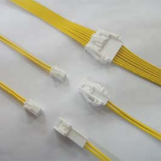
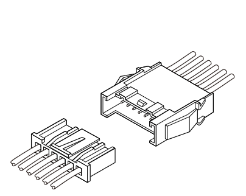
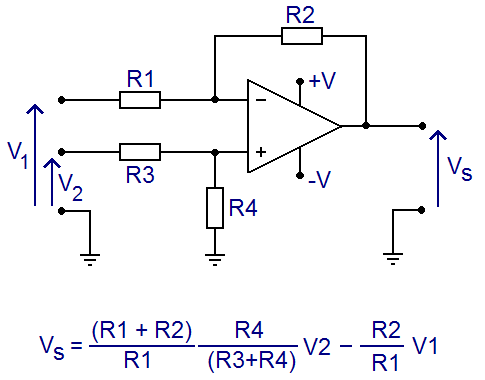
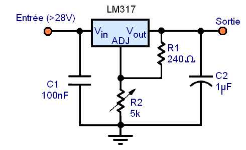
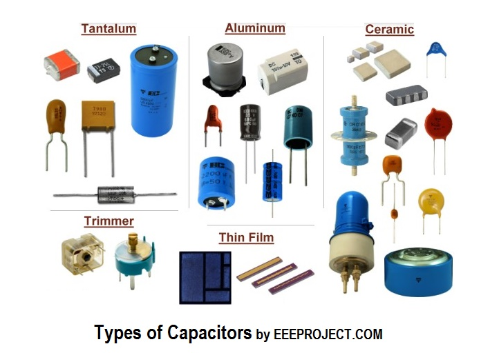

Elec-Mechatronics
Theory :
Oddities :
-
Ternary electronics : it's a thing that exists...
A ternary computer (also called trinary computer) is a computer that uses ternary logic (three possible values) instead of the more popular binary system ("Base 2") in its calculations.
-
Humming (power supply resultant parasitic frequencies)
En électronique, le memristor (ou memristance) est un composant électronique passif. Il a été décrit comme le quatrième composant passif élémentaire, aux côtés du condensateur (ou capacité), du résistor (ou résistance) et de la bobine1,2(ou inductance). Le nom est un mot-valise formé à partir des deux mots anglais memory et resistor.
Un memristor stocke efficacement l’information car la valeur de sa résistance électrique change, de façon permanente, lorsqu’un courant est appliqué3.
Making circuits :
Decoupling capacitors :
Usually : A 0.1uF capacitor between ground and supply planes before entry inside the IC, FOR EACH IC.
And one 10uF capacitor between ground and supply plane for all ICs.
Cables & Connectors
Cables :
AWG est une unité de mesure standardisée américaine qui classe les conducteurs électriques suivant leur diamètre. Plus la valeur AWG est élevée, plus le diamètre est petit.
Cette table de conversion représente les dimensions (diamètre, section), la résistance et le courant maximum supporté par les conducteurs suivant leur classement AWG (American Wire Gauge).
Ces valeurs sont effectives pour des conducteurs cuivre.

Connectors :
PCB side connectos : Castellated edge holes ( or semi plated holes )
{kind=link}

https://learn.sparkfun.com/tutorials/connector-basics/all
JST-SH or Qwiic (small form factor wire to board):
JST is not a connector !
Qwiic cable from sparkfun / 1mm JST-SH 
 Molex Picoblade / JST-ZH / JST-XH
Molex Picoblade / JST-ZH / JST-XH
Is it possible to crimp at home without machine JST-SH 1mm terminals : answer: not unless you have the JST expensive crimp tool (about 800$)
Buy them already crimped :
Adafruit pour acheter JST-SH 4 pins pré-sertis (USA)
Gotronic pour acheter JST-SH 4 pins pré-sertis (FR)
JST - XH (wire to board)

JST - VH (10A higher load board connectors : 3.93 mm pitch)
JST - XA (wire to wire)

Classic 2.54 pins :
Wire to board : Molex KK (molex  ) as by this guy on internet :
) as by this guy on internet :
JST XH (2.5mm) : very cheap, well designed, good retention polarisation, SMD and TH versions. Crimp tools are very good, though expensive. Way better than Molex's overpriced, poorly retaining, single-side contact KK
Wire to wire : E.I. – Economical Interconnect – TE, Formerly Tyco, Formerly AMP E.I
http://tech.mattmillman.com/info/crimpconnectors/
Connecteurs "LED strip (cable to cable asez petit)"
To crimp most "common size" terminals, PA-90 and PA-20 : "generic crimp tools Engineer PA series sold by Adafruit and others" are fine : Cheatsheet of compatibility and dies choice for each cable size and terminal type
PZN :
Omnetics PZN Nano strip miniature polarized connectors ref
SLC :
Spring Loaded Connectors - How to choose them
Mill-Max® (do not manufacture only spring loaded connectors)
DigiKey's Spring loaded connectors video tutorial

RotaConnect :
Amphenol rotaconnect : connectors
The RotaConnect® BtB range is a unique rotatable Board-to-Board SMT connector that can be used to support perpendicular, coplanar and angled connections, in multiple mating and un-mating directions.

Slip Rings :
List of products on Cosmau tech
JinPat
SenRing
Signal
Analogic electronics :
-
Website about electronics montages : LearnAboutElectronics
-
Website with a lot of infos on amplifier types, impedance and so on :
- Website with courses on operational amplifiers - theory and practice :
- Various low pass filters (RC passive, op amp active...) (online calculator)
- Various high pass filters : (online calculator)
Ampli ops montage types :
- montage soustracteur :

- montage sommateur avec coefficients
- Inverting Op Amp Low Pass Filter (online calculator)
- Differentiator
- Op amp differentiator
- Differentiator amplifier
Appareils traitement signal analogique :
Signal to Noise Ratio :
Signal-to-noise ratio (SNR), which is equal to the mean divided by the standard deviation.
Pour définir la façon dont le bruit affecte l'image, on produit ou on reproduit des plages uniformes. La variation du signal sur une plage définit le bruit qui affecte l'image. Sur cette plage, la luminance ou une grandeur qui lui est proportionnelle définit le niveau nominal.
Pour définir un rapport signal sur bruit qui ressemble à celui de l'électronique, on postule arbitrairement que la « puissance » est proportionnelle au carré de cette grandeur. La puissance du bruit est, elle, définie comme en électronique par la variation autour de la valeur nominale. Le rapport signal sur bruit est le rapport de cette « puissance » de l'image à celle du bruit
Scipy implementation in python and concerns on stack overflow
Power :
Power control :
Triac : MOC3021
Optocoupleur lecture phase 220V : 4N35
Controle energy injection from 220V hardware
- Variable frequency driver (VFD) electronoobs video link
Power regulation :
ML317 regulateur tension variable

La tension de sortie vaut : $$ V_{out} = 1,25 \; V \; (1 + {R2\over R1}) $$ La tension d'entrée doit être supérieure de 3 Volts à la tension de sortie maximale
R1 ne doit pas dépasser 240 Ohms pour garantir au moins 5 mA de courant de sortie.
Pour courants faibles, choisir des régulateurs dits "micropower"
Resolution : pour voltage de 1.25 à 12 V : $$ V = 1.25 ( 1 + { { 1 \over { {1 \over Pot} + {1 \over 2000 \; \Omega} } } \over 200 } ) $$ R1 : 0-10K pot, in parallel with 2000 Ohm resistance.
R2 : 200 Ohm
R1 150 ohms
R2 67 ohms : Vout = 1,8V
-
230V 10A voltage regulator ref
Batteries :
Learn everything about batteries : Battery University
Lithium ion :
-
- Smallest form : 10x15x3.5 - 50mAh
- 250 mAh - JST SH 1.0
-
18650 Batteries 3.7V batteries
Modules to charge and discharge:
Overcurrent protection :
DIY Short Circuit (Overcurrent) Protection
Microcontrollers :
Most pinouts : https://ouilogique.com/pinouts/
Blyst Nano (fingertip ARM and bluetooth microcontroller)
Raspberry Pi consuption rating across models :
Low cost IA enabled (tensorflow lite) Arduino
Arduino tutorial for machine learning with KNN
PICkit : tool to program microcontrollers and debug the in situ
Communication :
RF LORA article on designspark RF LORA module on RS

- Max 488e for full duplex diff communication ( UART TX RX with two masters without any software overload necessary )
- Max 485e for one master multiple slave communication (half-duplex) ( need a proper way to handle this in soft, with a protocol for end of transmission, master emission, master listening, addresses ) Kind of redundant with i2c which has a simpler software layer and an easy component to go differential ( PCA9615 )
- Max 489e for a multiple master diff full duplex communication with a need for a software collision detection layer with CRC. ( high software impact but some libraries may exist already )
I2C protocol explained - Another one
On teensy boards :
Device is by default not a USB device but it depends on code. If code starts connection with computer (serial.begin and then the computer open com either on arduino serial monitor or on any program taking hand on serial port) then it is USB based or if not, is is HID based. https://www.pjrc.com/teensy/td_serial.html
Keeping time :
RTC : real time clock module
Low power :
Sleep mode wake by external interrupt : https://thekurks.net/blog/2018/1/24/guide-to-arduino-sleep-mode
2 options : wake if interrupt is sensor and make action.
If keeping time : wake every second on RCT pulse, check sensors, eventually take action and go back to sleep.
Doc on that matter : https://arduino.stackexchange.com/questions/76296/how-to-keep-track-of-millis-during-sleep-mode - https://forum.arduino.cc/index.php?topic=116759.0
FPGAs:
Using VDHl and creating a counter
Sensors :
Magnetic :
Hall effect :
Linear , latching , or simple (digital ) - Info about the variants
- Linear (or ratiometric) : A1308 and A1309 from Allegro-microsystems - or A1302 - discontinued
- Digital : OH090U from OPTEK or A1101 to A1104 from Allegro-microsystems ( A3141 - A3144 discontinued)
- Latching : US1881 from Melexis
IMUs:
Inertial sensors for positioning and orientation estimation
On computer AHRS fusion :
-
madgwick.py: A Python implementation of Madgwick's IMU and AHRS algorithm.
This implementation was done at the Cognitive Systems Lab (CSL) of the Karlsruhe Institute of Technology: - micropython-fusion
This document describes the case where sensor data is acquired, and fusion is performed, on a single platform running MicroPython.
Touch :
ELO TouchSystems E803003 / 139212-000 12.1" AccuTouch 5-WIRE Resistive TouchScreen
Actuators :
Moteurs :
Moteurs pas à pas asservis plug and play Trinamic PD-1378
Control moteur asynchrone monophasé PID
Controllers :
Odrive to control brushless motors
Speed control or induction motor : voltage regulator
Control 3phase motor witharduino
Closed loops systems:
PIDs
Displays :
7 segments :
Common to use the TM1637 IC to drive 6 digits (8segments per digit)
Modules exist with the driver and some 7segments ICs : 4digits
Library for this driver : TM1637 on github
Manufacture :
RS's Designspark's PCB manufacturers list : Mint tek
Components :
SMD (CMS in french) breadboard adaptors at radiospares

- dual in line package (DIP or DIL)
- ceramic or plastic dual in line packages (CDIP - PDIP)
- small outline integrated circuit (SOIC)
- Small-outline package (SOP)
-
Shrink small-outline package (SSOP)
-
Thin small-outline package (TSOP)
- Thin-shrink small-outline package (TSSOP)
Capacitors :


PCBs:
Making PCBS at home with laser cutter
Plaque présensibilisée - Revelateur
Making soldermask at home with plastifier and UV lamp
Sustainability :
Sell electronic wastes and scrap website : BoardSort